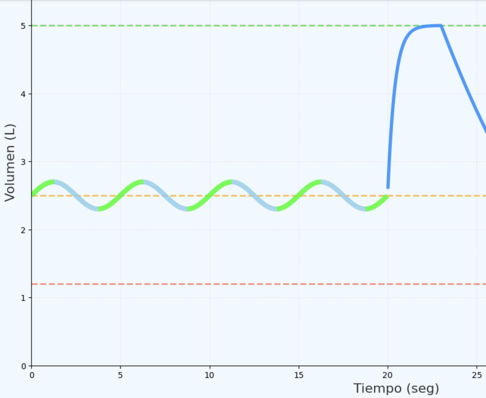
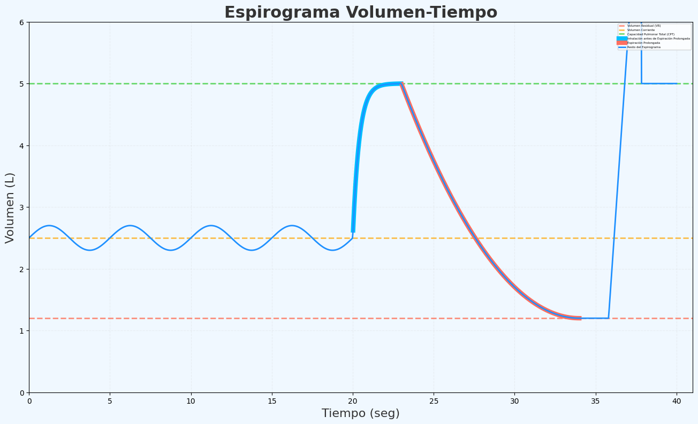
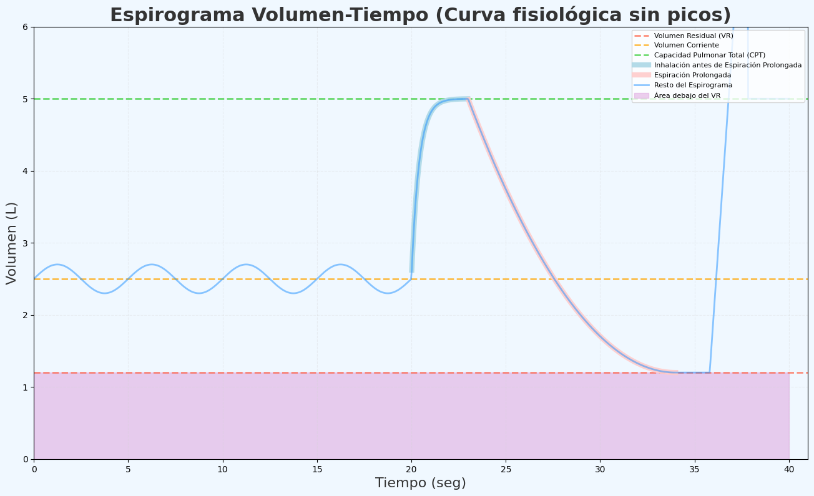

Técnica Guiada
Aprende cómo se leen tus pulmones, mira videos tutoriales por tipo de examen y practica con nuestros simuladores interactivos.
Cómo leemos tus pulmones
Entiende qué es un espirograma y cómo interpretamos tu respiración.
¿Qué es un espirograma y qué mide?
Un espirograma es un gráfico que muestra cómo funcionan tus pulmones. El gráfico se compone de Volumen (en litros) y Tiempo, es decir, cuánto aire inhalas y exhalas en cada respiración.
Además, tenemos la capacidad de inhalar hasta llenar al máximo los pulmones o soplar sin detenernos hasta vaciarlos lo máximo posible.

Respiración normal
A tu respiración "normal" (el aire que entra y sale de los pulmones sin hacer esfuerzo) lo conocemos como Volumen Corriente, este nos muestra cuántos mL o litros usas para respirar relajado.
También vemos en qué fase de tu respiración te encuentras durante el examen.

Reservas pulmonares
Todos tenemos una reserva que podemos usar tanto para inhalar aire como para espirarlo.

Volumen de Reserva Inspiratorio
Al inhalar a tu máxima capacidad, analizamos tu Volumen de Reserva Inspiratorio. Debes inhalar y forzar el llenado de tus pulmones a más no poder.
Capacidad Vital
Al espirar largo, sin parar hasta finalizar haciendo presión con el abdomen para vaciar hasta la "última gota" de aire, analizamos todo el aire que pueden soplar tus pulmones.
El volumen de reserva espiratorio es lo que puedes soplar sin parar desde tu respiración normal, no desde los pulmones llenos.
Entonces, la Capacidad Vital es la suma de tu respiración normal y tus reservas de llenar o vaciar los pulmones.
Volumen Residual
No hay peligro al soplar sin detenerte hasta no poder más, nuestros pulmones poseen una reserva de aire que no podemos sacar por más que presionemos, a esto lo conocemos como el Volumen Residual.
Para poder realizar la lectura de este volumen, es necesario realizar una Pletismografía Corporal, ya que la espirometría no lee ese volumen pulmonar.

Con estas herramientas podemos evaluar de manera precisa la salud de tus pulmones y detectar cualquier anomalía en tu función respiratoria.
Videos · Adultos
Tutoriales paso a paso para cada tipo de examen en adultos. Haz clic en cada tarjeta para acceder a los videos y comentarios.
Espirometría
Evalúa cuánto aire puedes expulsar y qué tan rápido.
🎥 Ver técnica Aprender técnica →DLCO
Evalúa intercambio gaseoso pulmonar.
🎥 Ver técnica Aprender técnica →Pletismografía corporal
Evalúa volúmenes pulmonares completos.
🎥 Ver técnica Aprender técnica →IOS
Oscilometría respiratoria sin esfuerzo.
🎥 Ver técnica Aprender técnica →FENO
Evalúa inflamación respiratoria.
🎥 Ver técnica Aprender técnica →PIM / PEM
Evalúa fuerza muscular respiratoria.
🎥 Ver técnica Aprender técnica →Test de provocación bronquial
Estudia hiperreactividad bronquial.
🎥 Ver técnica Aprender técnica →SHUNT
Evalúa alteraciones de oxigenación.
🎥 Ver técnica Aprender técnica →Caminata 6 minutos
Evalúa tolerancia al ejercicio.
🎥 Ver técnica Aprender técnica →Gasometría arterial
Evalúa O₂, CO₂ y equilibrio ácido-base.
🎥 Ver técnica Aprender técnica →Test cardiopulmonar (CPET)
Evalúa respuesta cardiorrespiratoria al esfuerzo.
🎥 Ver técnica Aprender técnica →Espirometría Pre/Post BD
Evalúa respuesta al broncodilatador.
🎥 Ver técnica Aprender técnica →Videos · Niños
Tutoriales adaptados para los más pequeños, con un enfoque lúdico.
Espirometría Pediátrica
Técnica adaptada con juegos para niños.
🎥 Ver técnica Aprender técnica →DLCO Pediátrico
Maniobra de difusión para niños.
🎥 Ver técnica Aprender técnica →IOS Pediátrico
Oscilometría sin esfuerzo para niños.
🎥 Ver técnica Aprender técnica →FENO Pediátrico
Mide inflamación en niños.
🎥 Ver técnica Aprender técnica →Test de Ejercicio
Respuesta al ejercicio en niños.
🎥 Ver técnica Aprender técnica →Provocación Bronquial
Hiperreactividad en niños.
🎥 Ver técnica Aprender técnica →Simuladores
Practica las maniobras respiratorias con nuestros simuladores interactivos.
¿Cómo usar los simuladores?
Selecciona el simulador del examen que deseas practicar. Cada simulador te guiará paso a paso a través de la maniobra respiratoria, mostrando en tiempo real el volumen pulmonar y la fase de la respiración.
Puedes ajustar parámetros como la velocidad de simulación y los volúmenes pulmonares para personalizar tu práctica.
Espirometría (CVF)
Practica la maniobra de capacidad vital forzada.
Abrir simulador →DLCO
Simula la maniobra de difusión de monóxido de carbono.
Abrir simulador →Pletismografía
Simula la medición de volúmenes pulmonares.
Abrir simulador →Pediatría
Simuladores adaptados para niños.
Próximamente →📌 Consejo FPAIR
Los simuladores son herramientas educativas que te ayudan a familiarizarte con las maniobras respiratorias. No reemplazan la instrucción de un profesional de la salud.